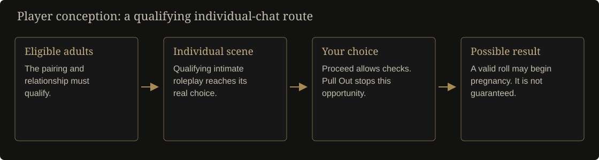
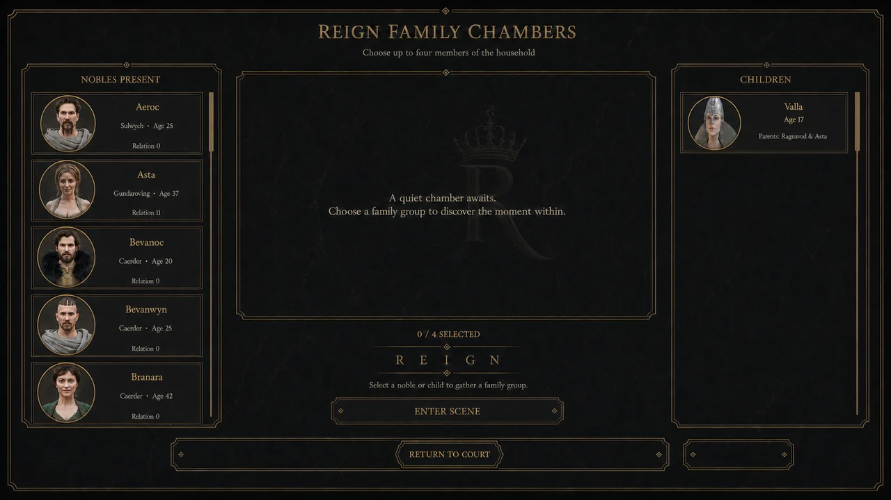

Mount & Blade II: Bannerlord · Reign
Relationships and starting a family
Build relationships, arrange marriages, and understand family life.
Development guide · November 24, 2026 · Edition notes
Friendship, romance, and long memories
#You can build affection through shared time, conversation, help, and compatible interests. Background relationship processing can also bring people closer or create friction. One person may feel more strongly than the other.
Romance can progress from flirtation to a closer and more serious bond. Same-sex romance is supported. Rivalries, favor debts, marital conflict, and shared secrets can become ongoing stories rather than temporary mood changes. A life-changing act carries more weight than a routine compliment, especially when the benefit actually reached the recipient.
Affairs and flings depend on the people involved and can lead to jealousy, rumors, pregnancy, estrangement, and public consequences. One willing person cannot supply the other's agreement. A marriage can deteriorate or end; its consequences can extend beyond the couple.
Marriage and NPC matchmaking
#Native player courtship remains available. Use the arranged marriage flow to negotiate a named couple through their clan leaders. A match and its final marriage can happen at different times.
With Use Reign-Controlled NPC Marriage enabled in Reign's MCM, background matchmaking favors clans of comparable standing. A lower-standing clan may need to pay compensation. Royal matches with landless houses require a rare opportunity as well as approval and funding. A completed match can improve both leaders' relations. A formal refusal can damage the proposer's view of the other leader, and identical refused terms are remembered. Changing the matchmaking setting preserves existing marriages.
Leave your spouse by letter asks an eligible married NPC to end their existing marriage. The NPC must consent to the exact terms. Separation takes effect with a private notice and can badly damage relations with the former spouse's clan. A later marriage needs its own agreement.
Arranged marriage offers and cultural weddings
#A clan leader can propose a match for you or an eligible member of your clan. To start a proposal, open Alt+A with the eligible clan leader and select Propose an arranged marriage…. Confirm both names, which clan a spouse would join, and the agreed gold, items, captive release or transfer, and eligible land. The exact accepted terms carry forward to settlement.
- Open Correspondence with Ctrl+M. Select the issuing leader, then choose View marriage offer. You can also use the action builder with that leader in an eligible conversation.
- Choose Accept this marriage proposal, Refuse this marriage proposal, or Request a meeting with… when available. You have 30 campaign days from delivery to respond. A timely sent acceptance or refusal stays on record while the courier travels. An unanswered offer can expire. Refusal and expiration have different relationship consequences.
- For a meeting, choose an eligible town and check the arrival estimate before sending the request. There is one timed visit for the offer. Speak privately with the prospective spouse to learn their answer.
- For an agreed player-clan match, select Marry now or Hold a ceremony when the choice becomes available. For a ceremony, choose from the towns the couple can safely enter. The booking gives you a date and attendance window. Other eligible NPC matches can schedule a wedding automatically.
- Attend the scheduled ceremony and complete its cultural stages. During the ceremony, an eligible player can open Alt+A and choose Withdraw from my wedding…. At finalization, check the spouses, clan move, and completed transfers. Guests return to their ordinary duties afterward.
For a wedding arranged as part of diplomacy, check the completed settlement after the ceremony. A verified marriage can apply the agreed relationship change between the sponsoring leaders in that campaign. A scheduled booking or an unconfirmed report can still be pending. Past marriages remain part of a character's history even if their later spouse changes.
See Marriage actions and wedding choices for the exact builder routes.
Having a baby: the important change
#A new player-parented pregnancy can begin only through a qualifying intimate event in an individual Reign conversation. Bannerlord's background spouse-visit pregnancy system is disabled for the player and their spouse. Simply marrying, waiting together, traveling with your spouse, or sharing a settlement will not create a new child parented by the player.
This applies whether the player would be the mother or the father. A group conversation, a letter, or an announcement is not the individual-chat conception route. The relationship, adult eligibility, reproductive age, biological pairing, and family restrictions still apply. A qualifying scene creates an opportunity, not a guaranteed pregnancy.
When the qualifying scene reaches its reproductive choice, read the actual inquiry. Proceed allows the conception opportunity to resolve. Pull Out prevents that opportunity and returns the choice to the conversation. Reopening or repeating a cancelled choice does not create another roll for the same event.

Pregnancy, parentage, and pregnant companions
#Reign distinguishes biological and legal parentage. A pregnancy can be private, and revealed illegitimate parentage can bring social consequences. A child's recorded history is not just whatever someone last claimed in dialogue.
The action selector can also expose a confirmed concealed illicit pregnancy when the required knowledge exists, with optional known paternity. That is a public disclosure with consequences, not a guess based on a rumor or an omniscient way to discover a secret.
With Restrict Pregnant NPCs From Combat enabled, pregnant NPCs withdraw from field duties and cannot start normal combat or military orders. They seek a safe fortification; party command may transfer or the party may be handled safely. This setting excludes the player character.
Birth restores ordinary eligibility, but it does not magically recreate an old party. Switching the setting off likewise does not reconstruct a party that was already disbanded. If your pregnant companion is unavailable for a patrol or duel, check this setting before treating it as a broken order.
Children and Family Chambers
#Use Family Chambers from Royal Court or Explore the keep → Castle Layout to find eligible adults and children present in that household. Adult cards and child cards are connected: selecting a parent helps you find their children, and selecting a child helps identify available parents.
Use Escape to return from the Family Chambers screen. It is a screen-navigation key, not a decision about the family.
Children receive age-appropriate family conversation, not adult romance or military orders. They can remember childhood interaction, with very early memories treated differently as they grow up. Education and normal skill information remain visible in the appropriate native interfaces.
